import pandas as pd
import numpy as np
import plotnine as p9
import folium, pyprojCase study: Groundwater monitoring
Wastewater in Eugene
Our wastewater (sewer plus stormwater) in Eugene and Springfield is treated by the Metropolitan Wastewater Management Commission, in part at the Biosolids Management Facility (see slideshow on that page).
As part of their operating requirements, they monitor groundwater for potential contamination: in 26 monitoring wells, since 1988.
Their biggest question: how to best detect if the facility is affecting the groundwater?
Note: the MWMC is very much on top of this, and has no evidence of groundwater contamination. This is being presented for pedagogical purposes.
What is measured?
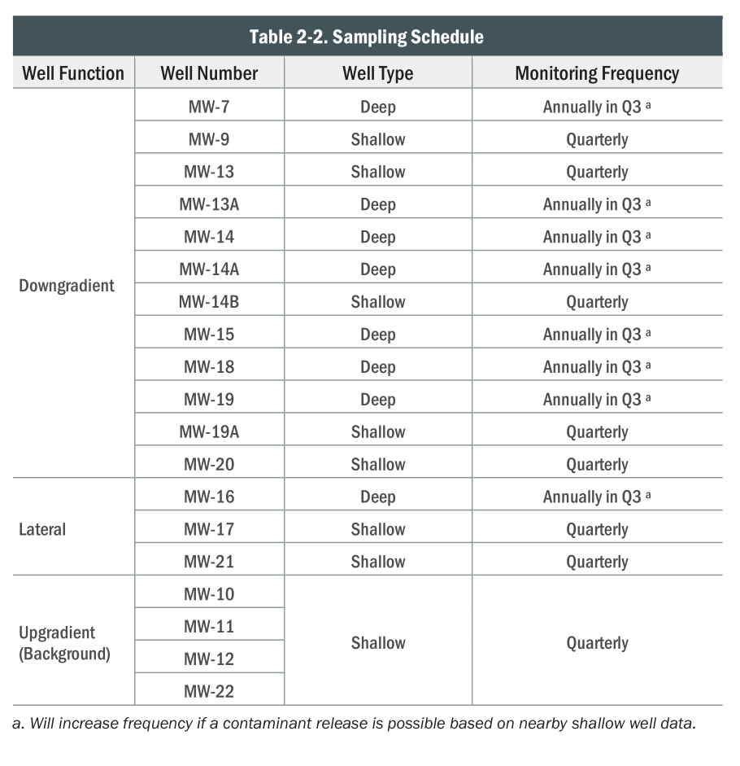
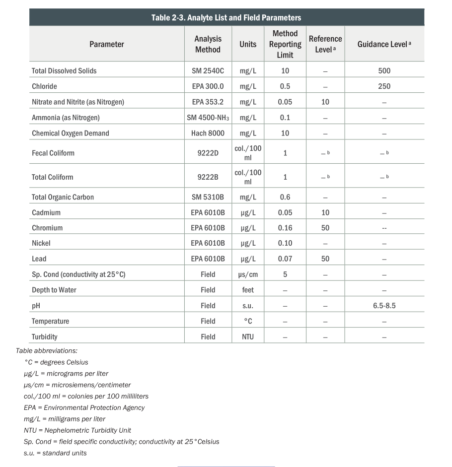
)Overview of the data:
We’ve got:
Information about the wells: BMF_Well_details_2023_GWMP.csv
The actual measurements: Eugene_BiosolidsManagementFacility_GroundwaterData.csv
Set-up
“Look at the data”, part 1
Game plan:
- How many wells are there?
- How many observations do we have from each, of what quantities, and over what time periods?
- Where are the wells, and what do we know about them?
Preliminary answers above; but let’s check this!
Measurements
- Measurements often run into detection limits; this is conveyed as “censoring status”.
well.nameis the name of the location with the first year it was in operation appended
$ head data/Eugene_BiosolidsManagementFacility_GroundwaterData.csv | tr ',' '\t'
"well.name" "SampledDate" "SampleNumber" "ParameterName" "ParameterUnits" "result" "Method.Detection.Limit" "Reporting.limit" "censoring.status" "Easting" "Northing"
"MW-13-1988" 1988-01-25 "880050" "Ammonia" "mg/L" 0.1 NA NA "left.censored" 4218262.9 910814.599999998
"MW-13A-1988" 1988-01-25 "880052" "Ammonia" "mg/L" 0.1 NA NA "left.censored" 4218304.4 910813.2
"MW-14-1988" 1988-01-25 "880054" "Ammonia" "mg/L" 0.1 NA NA "left.censored" 4217612.3 910814.700000002
"MW-14A-1988" 1988-01-25 "880055" "Ammonia" "mg/L" 0.1 NA NA "left.censored" 4217622.5 910814.499999998
"MW-14B-1988" 1988-01-25 "880058" "Ammonia" "mg/L" 0.1 NA NA "left.censored" 4217612.9 910804.299999995
"MW-13-1988" 1988-01-25 "880050" "Cadmium" "µg/L" 1 NA NA "left.censored" 4218262.9 910814.599999998
"MW-13A-1988" 1988-01-25 "880052" "Cadmium" "µg/L" 1 NA NA "left.censored" 4218304.4 910813.2
"MW-14-1988" 1988-01-25 "880054" "Cadmium" "µg/L" 1 NA NA "left.censored" 4217612.3 910814.700000002
"MW-14A-1988" 1988-01-25 "880055" "Cadmium" "µg/L" 1 NA NA "left.censored" 4217622.5 910814.499999998Pull in the data
gw = (
pd.read_csv("data/Eugene_BiosolidsManagementFacility_GroundwaterData.csv")
.convert_dtypes()
.rename(columns=lambda x: x.replace(".", "_"))
.assign(SampledDate = lambda df: pd.to_datetime(df['SampledDate']))
)
gw| well_name | SampledDate | SampleNumber | ParameterName | ParameterUnits | result | Method_Detection_Limit | Reporting_limit | censoring_status | Easting | Northing | |
|---|---|---|---|---|---|---|---|---|---|---|---|
| 0 | MW-13-1988 | 1988-01-25 | 880050 | Ammonia | mg/L | 0.1 | <NA> | <NA> | left.censored | 4218262.9 | 910814.6 |
| 1 | MW-13A-1988 | 1988-01-25 | 880052 | Ammonia | mg/L | 0.1 | <NA> | <NA> | left.censored | 4218304.4 | 910813.2 |
| 2 | MW-14-1988 | 1988-01-25 | 880054 | Ammonia | mg/L | 0.1 | <NA> | <NA> | left.censored | 4217612.3 | 910814.7 |
| 3 | MW-14A-1988 | 1988-01-25 | 880055 | Ammonia | mg/L | 0.1 | <NA> | <NA> | left.censored | 4217622.5 | 910814.5 |
| 4 | MW-14B-1988 | 1988-01-25 | 880058 | Ammonia | mg/L | 0.1 | <NA> | <NA> | left.censored | 4217612.9 | 910804.3 |
| ... | ... | ... | ... | ... | ... | ... | ... | ... | ... | ... | ... |
| 49552 | MW-9-1996 | 2026-01-21 | 012126-01-03 | WaterTableElevation | feet above mean sea level | 361.44 | <NA> | <NA> | not.censored | 4217256.3 | 909769.9 |
| 49553 | MW-19A-1988 | 2026-01-21 | 012126-01-04 | WaterTableElevation | feet above mean sea level | 361.72 | <NA> | <NA> | not.censored | 4217612.3 | 910354.1 |
| 49554 | MW-13-2024 | 2026-01-21 | 012126-01-05 | WaterTableElevation | feet above mean sea level | <NA> | <NA> | <NA> | not.censored | 4218339.234158 | 910812.64945 |
| 49555 | MW-14B-1988 | 2026-01-21 | 012126-01-06 | WaterTableElevation | feet above mean sea level | 360.56 | <NA> | <NA> | not.censored | 4217612.9 | 910804.3 |
| 49556 | MW-20-1988 | 2026-01-21 | 012126-01-07 | WaterTableElevation | feet above mean sea level | 361.5 | <NA> | <NA> | not.censored | 4217582.6 | 909534.0 |
49557 rows × 11 columns
What’s measured?
gw.groupby("ParameterName")['result'].describe()| count | mean | std | min | 25% | 50% | 75% | max | |
|---|---|---|---|---|---|---|---|---|
| ParameterName | ||||||||
| Ammonia | 3308.0 | 0.103789 | 0.03004 | 0.021 | 0.1 | 0.1 | 0.1 | 0.6 |
| Cadmium | 2508.0 | 0.390975 | 0.459542 | 0.0027 | 0.0075 | 0.2 | 1.0 | 5.0 |
| ChemicalOxygenDemand | 2489.0 | 8.962302 | 3.715514 | 3.6 | 5.0 | 10.0 | 10.0 | 96.0 |
| Chloride | 3316.0 | 5.562295 | 3.830561 | 0.5 | 3.8 | 5.0 | 6.9 | 49.0 |
| Chromium | 2510.0 | 2.394473 | 2.252434 | 0.045 | 0.511 | 2.0 | 5.0 | 56.0 |
| Conductivity | 3522.0 | 344.5477 | 143.069563 | 92.0 | 248.0 | 308.5 | 410.0 | 950.0 |
| Copper | 2520.0 | 2.897059 | 2.50814 | 0.039 | 0.3205 | 5.0 | 5.0 | 46.0 |
| FecalColiform | 3356.0 | 3.158522 | 25.10456 | 1.0 | 1.0 | 1.0 | 1.0 | 800.0 |
| Lead | 2502.0 | 2.105006 | 2.237623 | 0.002 | 0.0294 | 2.0 | 5.0 | 16.0 |
| Nickel | 2507.0 | 4.459762 | 4.080386 | 0.0087 | 0.456 | 5.0 | 10.0 | 13.0 |
| Nitrate | 3350.0 | 3.689657 | 2.205737 | 0.02 | 2.456 | 3.4 | 4.6 | 15.0 |
| Temperature | 223.0 | 13.675336 | 1.824945 | 8.6 | 12.6 | 13.5 | 14.8 | 18.8 |
| TotalColiform | 3346.0 | 6.614764 | 61.624235 | 1.0 | 1.0 | 1.0 | 1.0 | 2100.0 |
| TotalDissolvedSolids | 3358.0 | 231.526504 | 80.129682 | 60.0 | 180.0 | 214.0 | 270.0 | 880.0 |
| TotalOrganicCarbon | 2442.0 | 1.319935 | 1.039013 | 0.2 | 0.5 | 0.9 | 2.0 | 22.0 |
| WaterTableElevation | 3539.0 | 358.891123 | 3.812151 | 351.66 | 355.35 | 359.42 | 361.865 | 370.09 |
| Zinc | 2504.0 | 5.654278 | 4.790525 | 0.07 | 0.5735 | 10.0 | 10.0 | 20.0 |
| pH | 2250.0 | 6.945916 | 0.243518 | 5.94 | 6.81 | 7.0 | 7.1 | 8.4 |
How many things are measured?
Tabular form:
pd.crosstab(gw['well_name'], gw['ParameterName'])| ParameterName | Ammonia | Cadmium | ChemicalOxygenDemand | Chloride | Chromium | Conductivity | Copper | FecalColiform | Lead | Nickel | Nitrate | Temperature | TotalColiform | TotalDissolvedSolids | TotalOrganicCarbon | WaterTableElevation | Zinc | pH |
|---|---|---|---|---|---|---|---|---|---|---|---|---|---|---|---|---|---|---|
| well_name | ||||||||||||||||||
| MW-10-1983 | 44 | 47 | 45 | 47 | 47 | 47 | 47 | 47 | 47 | 47 | 43 | 0 | 44 | 45 | 43 | 48 | 47 | 0 |
| MW-10-1996 | 132 | 87 | 86 | 131 | 86 | 138 | 87 | 132 | 86 | 86 | 131 | 17 | 131 | 131 | 86 | 139 | 86 | 118 |
| MW-11-1983 | 47 | 48 | 48 | 47 | 48 | 49 | 48 | 49 | 48 | 48 | 48 | 0 | 46 | 49 | 45 | 49 | 48 | 0 |
| MW-11-1996 | 130 | 85 | 86 | 130 | 85 | 140 | 84 | 130 | 84 | 84 | 131 | 14 | 130 | 132 | 84 | 140 | 83 | 117 |
| MW-12-1983 | 46 | 47 | 47 | 48 | 47 | 46 | 47 | 48 | 47 | 47 | 48 | 0 | 47 | 48 | 44 | 48 | 47 | 0 |
| MW-12-1996 | 125 | 86 | 83 | 126 | 86 | 140 | 85 | 124 | 84 | 85 | 126 | 14 | 125 | 126 | 83 | 142 | 85 | 122 |
| MW-13-1988 | 141 | 97 | 98 | 140 | 97 | 149 | 97 | 147 | 97 | 97 | 141 | 1 | 144 | 142 | 93 | 152 | 97 | 80 |
| MW-13-2018 | 26 | 27 | 26 | 26 | 28 | 32 | 30 | 27 | 28 | 29 | 27 | 2 | 27 | 26 | 27 | 31 | 29 | 32 |
| MW-13-2024 | 7 | 6 | 6 | 6 | 6 | 7 | 6 | 7 | 6 | 6 | 6 | 7 | 7 | 6 | 6 | 7 | 6 | 7 |
| MW-13A-1988 | 170 | 129 | 128 | 171 | 130 | 178 | 129 | 173 | 129 | 129 | 174 | 7 | 172 | 173 | 125 | 177 | 129 | 110 |
| MW-14-1988 | 169 | 125 | 125 | 170 | 125 | 177 | 126 | 172 | 125 | 125 | 173 | 8 | 172 | 174 | 122 | 179 | 125 | 110 |
| MW-14A-1988 | 179 | 132 | 132 | 179 | 132 | 184 | 133 | 181 | 132 | 132 | 182 | 6 | 181 | 181 | 128 | 187 | 132 | 116 |
| MW-14B-1988 | 180 | 138 | 136 | 182 | 139 | 193 | 141 | 184 | 138 | 140 | 182 | 16 | 184 | 183 | 136 | 192 | 140 | 124 |
| MW-15-1988 | 163 | 124 | 124 | 164 | 123 | 174 | 124 | 166 | 123 | 123 | 165 | 6 | 166 | 166 | 122 | 177 | 124 | 110 |
| MW-16-1988 | 169 | 129 | 130 | 170 | 131 | 178 | 133 | 171 | 129 | 130 | 172 | 8 | 171 | 174 | 126 | 181 | 130 | 112 |
| MW-17-1988 | 182 | 138 | 137 | 180 | 136 | 192 | 136 | 184 | 135 | 137 | 181 | 14 | 184 | 181 | 134 | 193 | 137 | 126 |
| MW-18-1988 | 181 | 136 | 136 | 182 | 136 | 188 | 137 | 183 | 136 | 136 | 185 | 6 | 183 | 183 | 133 | 189 | 135 | 118 |
| MW-19-1988 | 165 | 125 | 124 | 167 | 125 | 175 | 125 | 167 | 125 | 125 | 170 | 6 | 167 | 169 | 123 | 174 | 125 | 108 |
| MW-19A-1988 | 175 | 135 | 131 | 176 | 134 | 197 | 135 | 180 | 134 | 133 | 179 | 19 | 179 | 176 | 130 | 201 | 134 | 136 |
| MW-20-1988 | 183 | 136 | 134 | 179 | 138 | 199 | 139 | 189 | 139 | 136 | 186 | 18 | 189 | 182 | 135 | 202 | 135 | 137 |
| MW-21-1988 | 178 | 136 | 135 | 179 | 136 | 187 | 137 | 180 | 136 | 136 | 179 | 15 | 180 | 181 | 133 | 185 | 136 | 121 |
| MW-22-1988 | 172 | 133 | 130 | 172 | 133 | 184 | 133 | 175 | 133 | 135 | 173 | 19 | 176 | 175 | 129 | 186 | 133 | 117 |
| MW-7-1983 | 45 | 48 | 48 | 46 | 48 | 49 | 48 | 40 | 48 | 48 | 46 | 0 | 45 | 48 | 45 | 49 | 48 | 0 |
| MW-7-1996 | 123 | 78 | 78 | 123 | 78 | 126 | 78 | 123 | 78 | 78 | 123 | 5 | 123 | 126 | 78 | 128 | 78 | 106 |
| MW-9-1983 | 47 | 48 | 48 | 47 | 48 | 48 | 48 | 48 | 48 | 48 | 47 | 0 | 44 | 48 | 45 | 49 | 48 | 0 |
| MW-9-1996 | 129 | 88 | 88 | 128 | 88 | 145 | 87 | 129 | 87 | 87 | 132 | 15 | 129 | 133 | 87 | 141 | 87 | 123 |
When was each well used?
(
pd.crosstab(gw['well_name'], gw['SampledDate'].dt.year)
.reset_index()
.melt(id_vars=['well_name'])
.assign(year=lambda df: pd.to_numeric(df['SampledDate']))
>>
p9.ggplot(p9.aes(x='year', y='value', color='well_name'))
+ p9.geom_point() + p9.geom_line()
) + p9.theme(figure_size=(16,6))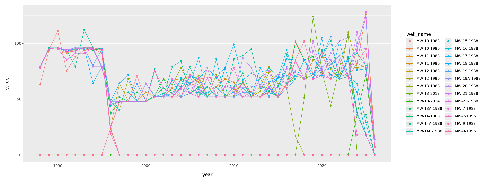
When was each thing measured?
(
pd.crosstab(gw['ParameterName'], gw['SampledDate'].dt.year)
.reset_index()
.melt(id_vars=['ParameterName'])
.assign(year=lambda df: pd.to_numeric(df['SampledDate']))
>>
p9.ggplot(p9.aes(x='year', y='value', color='ParameterName'))
+ p9.geom_point() + p9.geom_line()
+ p9.labs(y='number of measurements')
+ p9.theme(figure_size=(16,6))
)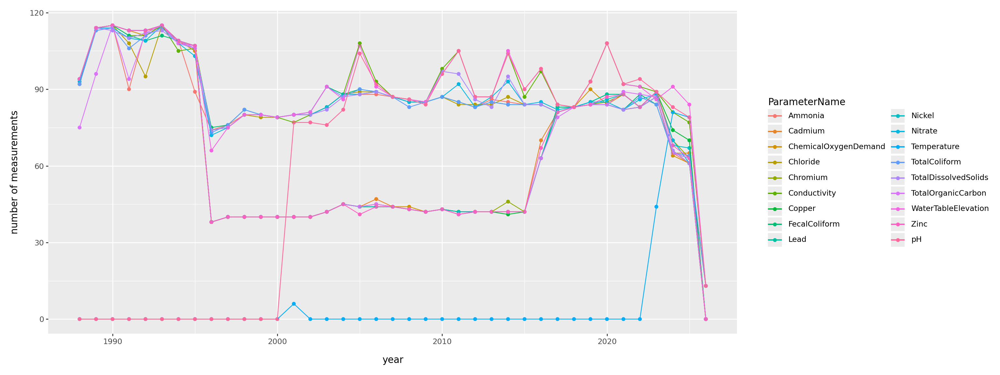
Summary:
How many observations do we have from each, of what quantities, and over what time periods?
Exercise.
Where are the wells?
Well info
$ cat data/BMF_Well_details_2023_GWMP.csv | tr ',' '\t'
LocationName well.orientation well.depth.category screened.interval.feet
MW-7 downgradient deep 42 to 52
MW-9 downgradient shallow 15 to 25
MW-13A downgradient deep 30 to 50
MW-14 downgradient deep 55 to 75
MW-14A downgradient deep 30 to 50
MW-14B downgradient shallow 10 to 25
MW-15 downgradient deep 30 to 50
MW-18 downgradient deep 30 to 50
MW-19 downgradient deep 30 to 50
MW-19A downgradient shallow 10 to 25
MW-20 downgradient shallow 10 to 25
MW-16 lateral deep 30 to 50
MW-17 lateral shallow 10 to 25
MW-21 lateral shallow 10 to 25
MW-10 upgradient shallow 15 to 25
MW-11 upgradient shallow 15 to 25
MW-12 upgradient shallow 15 to 25
MW-22 upgradient shallow 10 to 25
MW-13-2024 downgradient shallow 10 to 25Get per-well summaries from this
We’d like the location to be in the per-well table, so let’s pull this out of the “measurements” file first:
gw_wells = (
gw.groupby(['well_name', 'Easting', 'Northing'])
.aggregate(
n = ('SampleNumber', lambda x: len(x)),
)
.reset_index()
.assign(
LocationName = lambda df: "MW-" + df['well_name'].str.extract("-([0-9A-Z]*)-"),
FirstYear = lambda df: df['well_name'].str.extract("-([0-9A-Z]*)$")
)
)
gw_wells.loc[gw_wells['well_name'] == "MW-13-2024", 'LocationName'] = "MW-13-2024"Well information
wells = pd.merge(
(
pd.read_csv("data/BMF_Well_details_2023_GWMP.csv")
.convert_dtypes()
.rename(columns=lambda x: x.replace(".", "_"))
),
gw_wells, how='outer', on='LocationName'
)
wells| LocationName | well_orientation | well_depth_category | screened_interval_feet | well_name | Easting | Northing | n | FirstYear | |
|---|---|---|---|---|---|---|---|---|---|
| 0 | MW-10 | upgradient | shallow | 15 to 25 | MW-10-1983 | 4219307.315854 | 909474.081725 | 735 | 1983 |
| 1 | MW-10 | upgradient | shallow | 15 to 25 | MW-10-1996 | 4217879.6 | 908303.2 | 1890 | 1996 |
| 2 | MW-11 | upgradient | shallow | 15 to 25 | MW-11-1983 | 4217171.326475 | 908754.90989 | 765 | 1983 |
| 3 | MW-11 | upgradient | shallow | 15 to 25 | MW-11-1996 | 4217227.5 | 908744.7 | 1869 | 1996 |
| 4 | MW-12 | upgradient | shallow | 15 to 25 | MW-12-1983 | 4219118.324783 | 908681.318636 | 752 | 1983 |
| 5 | MW-12 | upgradient | shallow | 15 to 25 | MW-12-1996 | 4219546.5 | 908262.3 | 1847 | 1996 |
| 6 | MW-13 | <NA> | <NA> | <NA> | MW-13-1988 | 4218262.9 | 910814.6 | 2010 | 1988 |
| 7 | MW-13 | <NA> | <NA> | <NA> | MW-13-2018 | 4218262.9 | 910814.6 | 480 | 2018 |
| 8 | MW-13-2024 | downgradient | shallow | 10 to 25 | MW-13-2024 | 4218339.234158 | 910812.64945 | 115 | 2024 |
| 9 | MW-13A | downgradient | deep | 30 to 50 | MW-13A-1988 | 4218304.4 | 910813.2 | 2533 | 1988 |
| 10 | MW-14 | downgradient | deep | 55 to 75 | MW-14-1988 | 4217612.3 | 910814.7 | 2502 | 1988 |
| 11 | MW-14A | downgradient | deep | 30 to 50 | MW-14A-1988 | 4217622.5 | 910814.5 | 2629 | 1988 |
| 12 | MW-14B | downgradient | shallow | 10 to 25 | MW-14B-1988 | 4217612.9 | 910804.3 | 2728 | 1988 |
| 13 | MW-15 | downgradient | deep | 30 to 50 | MW-15-1988 | 4217592.3 | 909964.4 | 2444 | 1988 |
| 14 | MW-16 | lateral | deep | 30 to 50 | MW-16-1988 | 4217592.7 | 909113.7 | 2544 | 1988 |
| 15 | MW-17 | lateral | shallow | 10 to 25 | MW-17-1988 | 4219020.1 | 910333.0 | 2707 | 1988 |
| 16 | MW-18 | downgradient | deep | 30 to 50 | MW-18-1988 | 4217912.6 | 910784.0 | 2683 | 1988 |
| 17 | MW-19 | downgradient | deep | 30 to 50 | MW-19-1988 | 4217612.7 | 910364.2 | 2465 | 1988 |
| 18 | MW-19A | downgradient | shallow | 10 to 25 | MW-19A-1988 | 4217612.3 | 910354.1 | 2684 | 1988 |
| 19 | MW-20 | downgradient | shallow | 10 to 25 | MW-20-1988 | 4217582.6 | 909534.0 | 2756 | 1988 |
| 20 | MW-21 | lateral | shallow | 10 to 25 | MW-21-1988 | 4218063.0 | 908984.0 | 2670 | 1988 |
| 21 | MW-22 | upgradient | shallow | 10 to 25 | MW-22-1988 | 4218563.1 | 908764.3 | 2608 | 1988 |
| 22 | MW-7 | downgradient | deep | 42 to 52 | MW-7-1983 | 4217236.222717 | 910903.762698 | 749 | 1983 |
| 23 | MW-7 | downgradient | deep | 42 to 52 | MW-7-1996 | 4217291.5 | 910895.9 | 1730 | 1996 |
| 24 | MW-9 | downgradient | shallow | 15 to 25 | MW-9-1983 | 4217197.302791 | 909779.024971 | 759 | 1983 |
| 25 | MW-9 | downgradient | shallow | 15 to 25 | MW-9-1996 | 4217256.3 | 909769.9 | 1903 | 1996 |
Mapping
Let’s use folium. Looking at the documentation, we need a location in “Latitude and Longitude of Map (Northing, Easting)”.
Easting and Northing coordinates are provided in the ESPG: 2270 Coordinate Reference System (NAD83 / Oregon South (ft))
So first: find the center of the well locations, and project it to lat/long.
def transform(easting, northing):
crs = pyproj.CRS.from_epsg(2270)
latlon = pyproj.CRS(proj='latlon', datum='WGS84')
transformer = pyproj.Transformer.from_crs(crs, latlon)
y, x = transformer.transform(easting, northing)
return (x, y)
center = transform(wells['Easting'].mean(), wells['Northing'].mean())
center(44.132343700797044, -123.17902808886248)The wells:
folium.Map(location=center, zoom_start=16)Make this Notebook Trusted to load map: File -> Trust Notebook
Let’s get some more info on that:
After some iteration:
def add_marker(m, row=None, tooltip=None, location=None, **kwargs):
defaults = {
'radius': 10,
'fill_color': "orange",
'fill_opacity': 0.4,
'color': 'black',
'weight': 1
}
defaults.update(kwargs)
if location is None:
location = transform(row.Easting, row.Northing)
if tooltip is None and row is not None:
tooltip = row.LocationName
return folium.CircleMarker(
location=location,
tooltip=tooltip,
**defaults
).add_to(m)
well_bbox = (
transform(wells['Easting'].min(), wells['Northing'].min()),
transform(wells['Easting'].min(), wells['Northing'].max()),
transform(wells['Easting'].max(), wells['Northing'].max()),
transform(wells['Easting'].max(), wells['Northing'].min()),
)
def add_legend(m, colors, k=8):
dy = (well_bbox[1][0] - well_bbox[0][0])/k
pos = list(well_bbox[2])
for n in colors:
add_marker(m, location=pos, fill_color=colors[n]).add_to(m)
label = n if type(n) is str else 'NA'
folium.Marker(
pos,
icon=folium.DivIcon(
icon_size=(100,30),
icon_anchor=(-15,15),
html=f'<div style="font-size: 15pt">{label}</div>',
)
).add_to(m)
pos[0] -= dyWell orientation:
orientation_colors = {
'upgradient' : "#7fc97f",
'downgradient' : "#beaed4",
'lateral' : "#fdc086",
pd.NA : "#666666",
}
m = folium.Map(location=center, zoom_start=16)
add_legend(m, orientation_colors)
for r in wells.itertuples():
add_marker(m, r,
fill_color=orientation_colors[r.well_orientation],
)
mMake this Notebook Trusted to load map: File -> Trust Notebook
Well depth:
depth_colors = {
'shallow' : "#7fc97f",
'deep' : "#fdc086",
pd.NA : "#666666",
}
m = folium.Map(location=center, zoom_start=16)
add_legend(m, depth_colors)
for r in wells.itertuples():
add_marker( m, r,
fill_color=depth_colors[r.well_depth_category],
)
mMake this Notebook Trusted to load map: File -> Trust Notebook
Summary
Where are the wells, and what do we know about them?
Exercise
“Look at the data”, part 2
Game plan:
Do the measurements differ most:
- between wells?
- between types of well? (up/downgradient, shallow/deep)
- between years?
- between seasons?
- all/some of the above?
Do nearby wells get similar measurements?
All the data, from 20,000 feet
(
p9.ggplot(gw, p9.aes(x="SampledDate", y="result", color='well_name'))
+ p9.geom_line() + p9.geom_point(size=0.2, alpha=0.25)
+ p9.facet_grid(rows="ParameterName", scales='free_y')
) + p9.theme(figure_size=(8,24))/home/peter/micromamba/envs/ds435/lib/python3.13/site-packages/plotnine/layer.py:374: PlotnineWarning: geom_point : Removed 7 rows containing missing values.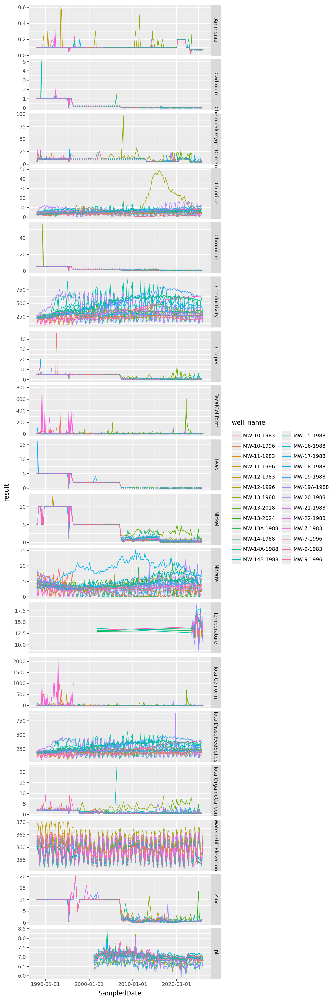
Observations?
What features do we see here and what do those features suggest doing?
Exercise
Set-up:
Let’s add well categories to the measurement data:
gw = pd.merge(
gw,
wells.loc[:,('well_name', 'well_orientation', 'well_depth_category')],
how='left',
on='well_name'
)
gw.head()| well_name | SampledDate | SampleNumber | ParameterName | ParameterUnits | result | Method_Detection_Limit | Reporting_limit | censoring_status | Easting | Northing | well_orientation | well_depth_category | |
|---|---|---|---|---|---|---|---|---|---|---|---|---|---|
| 0 | MW-13-1988 | 1988-01-25 | 880050 | Ammonia | mg/L | 0.1 | <NA> | <NA> | left.censored | 4218262.9 | 910814.6 | <NA> | <NA> |
| 1 | MW-13A-1988 | 1988-01-25 | 880052 | Ammonia | mg/L | 0.1 | <NA> | <NA> | left.censored | 4218304.4 | 910813.2 | downgradient | deep |
| 2 | MW-14-1988 | 1988-01-25 | 880054 | Ammonia | mg/L | 0.1 | <NA> | <NA> | left.censored | 4217612.3 | 910814.7 | downgradient | deep |
| 3 | MW-14A-1988 | 1988-01-25 | 880055 | Ammonia | mg/L | 0.1 | <NA> | <NA> | left.censored | 4217622.5 | 910814.5 | downgradient | deep |
| 4 | MW-14B-1988 | 1988-01-25 | 880058 | Ammonia | mg/L | 0.1 | <NA> | <NA> | left.censored | 4217612.9 | 910804.3 | downgradient | shallow |
Periodicity in water table elevation
Observations?
(
gw
.query("ParameterName == 'WaterTableElevation'")
>>
p9.ggplot(p9.aes(x="SampledDate.dt.dayofyear", y="result", color='factor(SampledDate.dt.year)'))
+ p9.geom_point(size=0.5, alpha=0.75) + p9.geom_line()
+ p9.facet_wrap("well_name")
) + p9.theme(figure_size=(8,16))/home/peter/micromamba/envs/ds435/lib/python3.13/site-packages/plotnine/layer.py:374: PlotnineWarning: geom_point : Removed 7 rows containing missing values.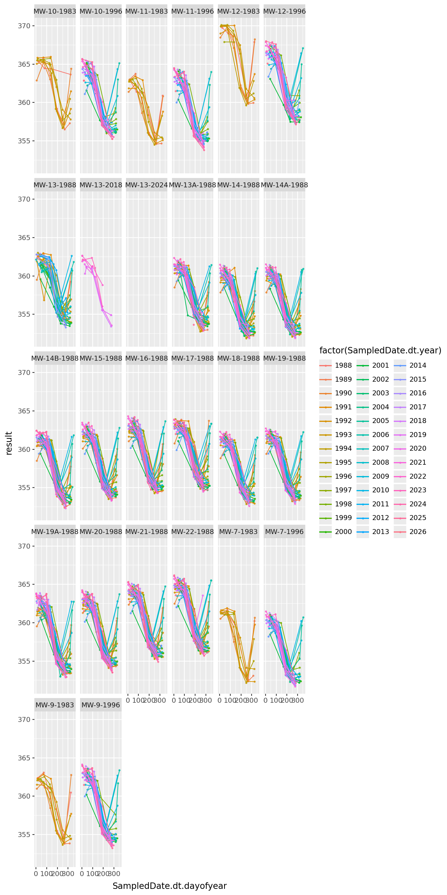
Nitrate
Observations?
(
gw
.query("ParameterName == 'Nitrate'")
>>
p9.ggplot(p9.aes(x="SampledDate", y="result", color='well_depth_category'))
+ p9.geom_point(size=0.5, alpha=0.5) + p9.geom_line()
+ p9.facet_grid(rows="well_name")
) + p9.theme(figure_size=(8,24))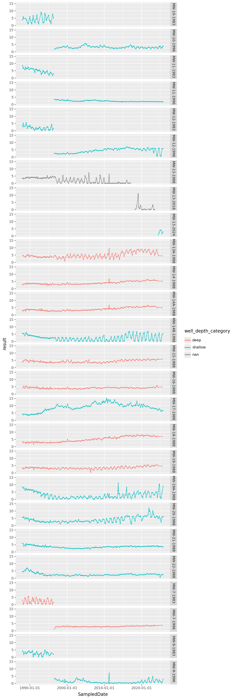
Chromium
(
gw
.query("ParameterName == 'Chromium'")
>> p9.ggplot(p9.aes(x="SampledDate", y="result", color="well_depth_category", group="well_name"))
+ p9.geom_line() + p9.geom_point(size=0.5, alpha=0.5)
) + p9.theme(figure_size=(12,6))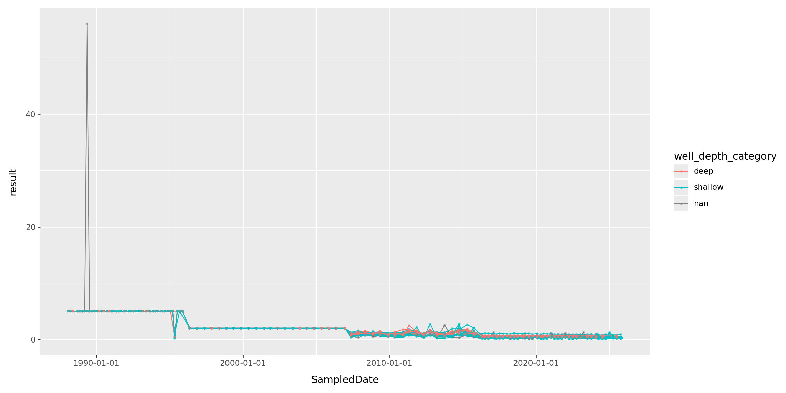
Chromium, better
(
gw
.query("ParameterName == 'Chromium'")
>> p9.ggplot(p9.aes(x="SampledDate", y="result", color="well_depth_category", group="well_name"))
+ p9.geom_line() + p9.geom_point(size=0.5, alpha=0.5)
+ p9.scale_y_log10()
) + p9.theme(figure_size=(12,6))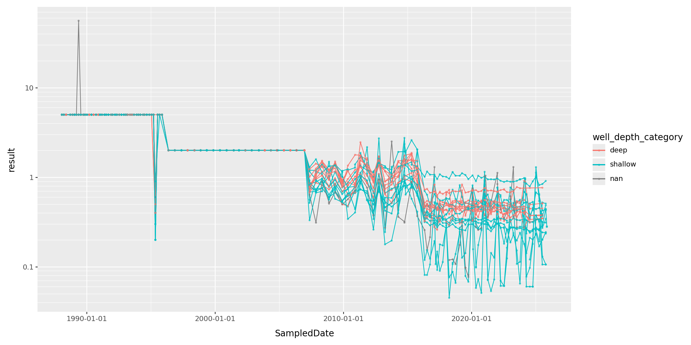
Conductivity
(
gw.query("ParameterName == 'Conductivity'")
>>
p9.ggplot(p9.aes(x="SampledDate", y="result", color='well_depth_category', group='well_name'))
+ p9.geom_point(size=0.5, alpha=0.5) + p9.geom_line()
) + p9.theme(figure_size=(12,6))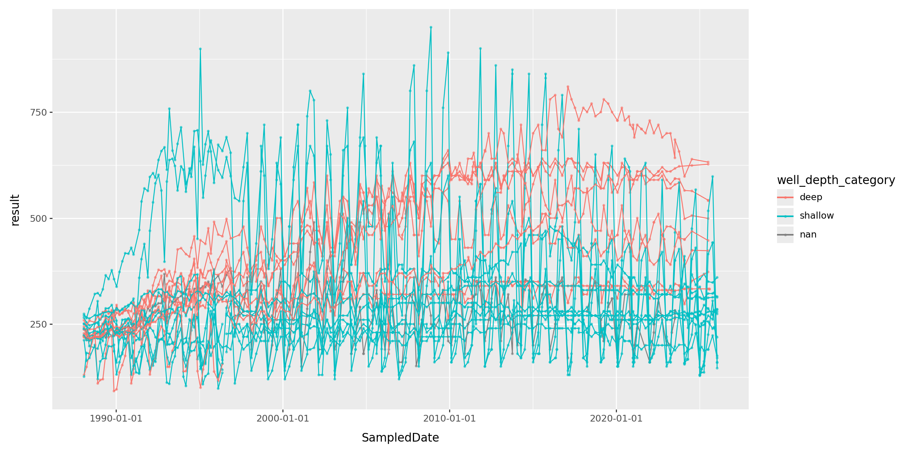
Without seasonal variation?
conductivity = (
gw
.query("ParameterName == 'Conductivity'")
.assign(year = lambda df: df['SampledDate'].dt.year)
.assign(mean_conductivity = lambda df: df.groupby(['well_name', 'year'])['result'].transform("mean"))
.assign(diff_conductivity = lambda df: df['result'] - df['mean_conductivity'])
)(
conductivity
>>
p9.ggplot(p9.aes(x="SampledDate", y="mean_conductivity", color='well_depth_category', group='well_name'))
+ p9.geom_point(size=0.2, alpha=0.25) + p9.geom_line()
+ p9.theme(figure_size=(12,6))
) / (
conductivity
>>
p9.ggplot(p9.aes(x="SampledDate", y="diff_conductivity", color='well_depth_category', group='well_name'))
+ p9.geom_point(size=0.2, alpha=0.25) + p9.geom_line()
+ p9.theme(figure_size=(12,12))
)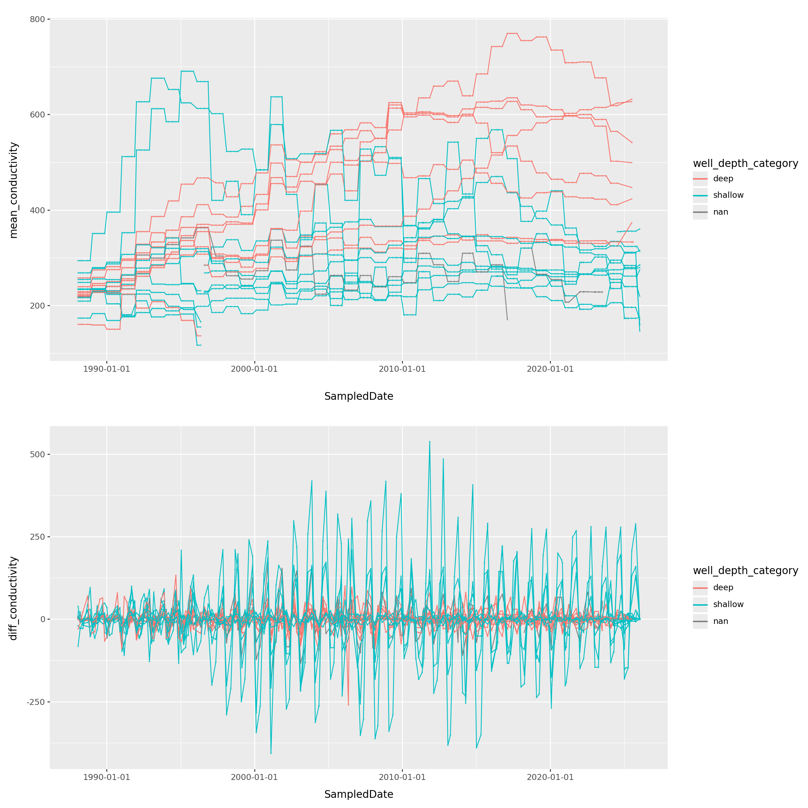
For which reasons to measurements differ?
Which measurements differ most:
- between wells?
- between types of well? (up/downgradient, shallow/deep)
- between years?
- between seasons?
- all/some of the above?
Update: observations?
What features do we see here and what do those features suggest doing?
Exercise, con’td
“Look at the data”, part 3
Next steps: brainstorm!
Ideas? Questions?
Do nearby wells get similar measurements?